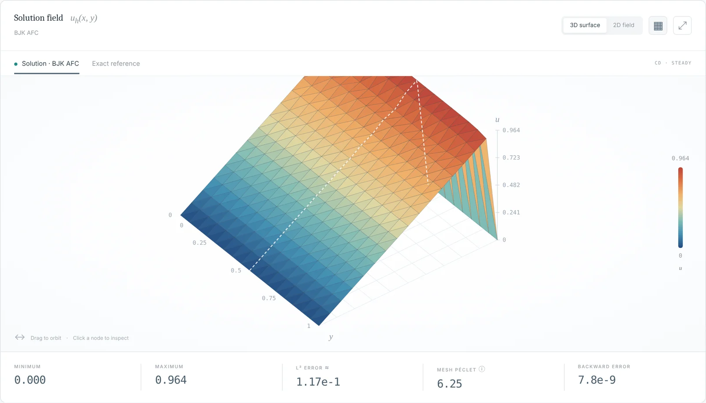
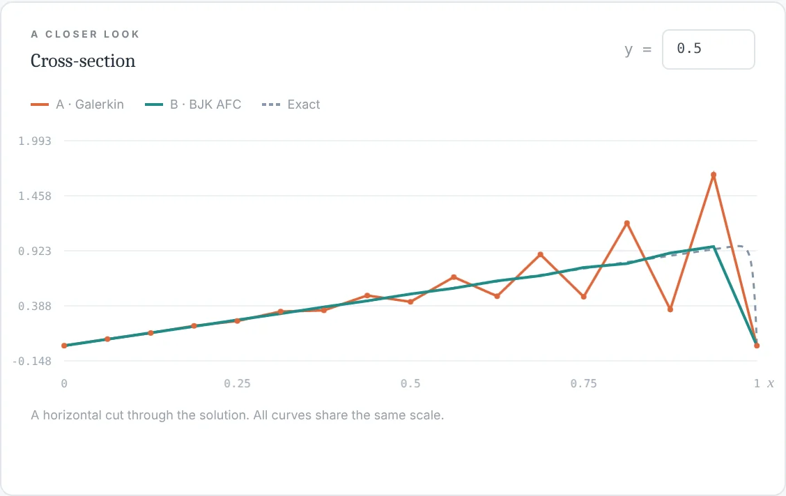

CDR FEM FCT lab


Choose an equation, refine the mesh, change a coefficient, and watch the discrete solution respond. The lab compares the Galerkin method with SUPG, isotropic artificial diffusion, algebraic flux correction with the BJK limiter, and flux-corrected transport for time-dependent problems. You can inspect the linear system, export the data, and measure convergence rates.
Three experiments to start with:
- Outflow layer, BJK AFCSteady convection–diffusion. Turn on “Compare two methods” to reproduce the picture above.
- Affine preservationSteady convection–diffusion on a shifted mesh. See how the limiter parameter μ decides whether an affine solution is reproduced exactly.
- Moving frontTransient transport. Compare low-order and flux-corrected schemes as a front crosses the domain.